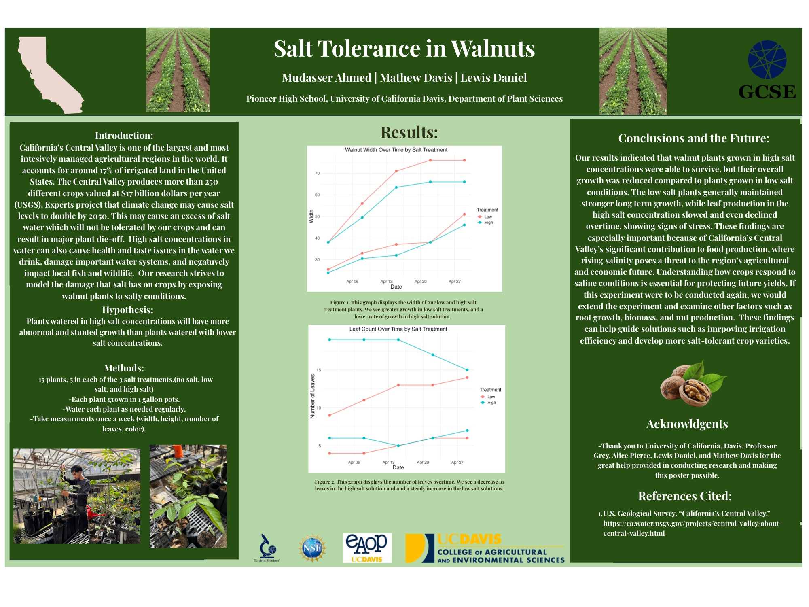
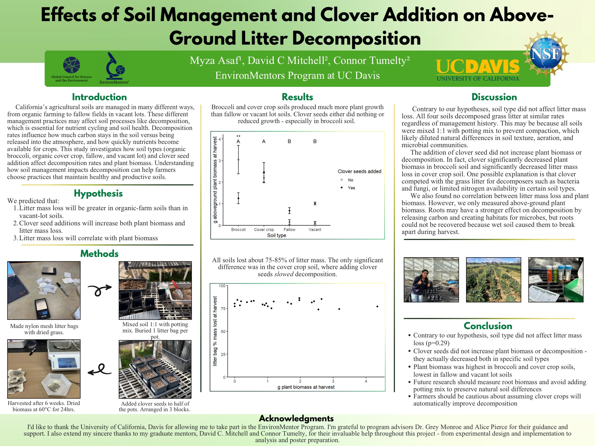
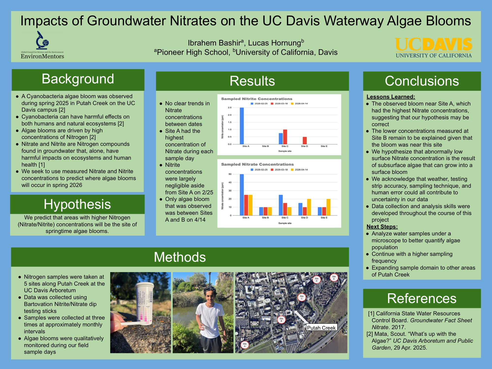
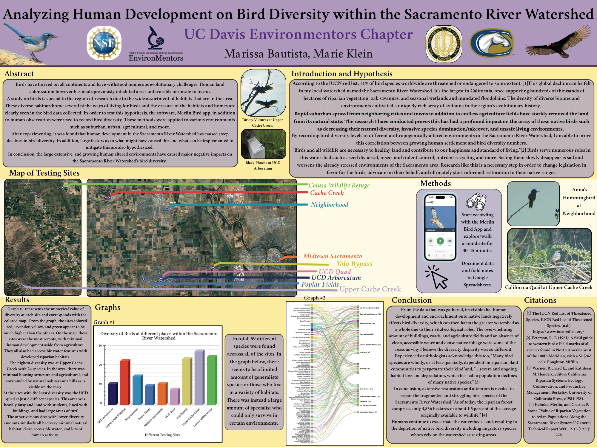
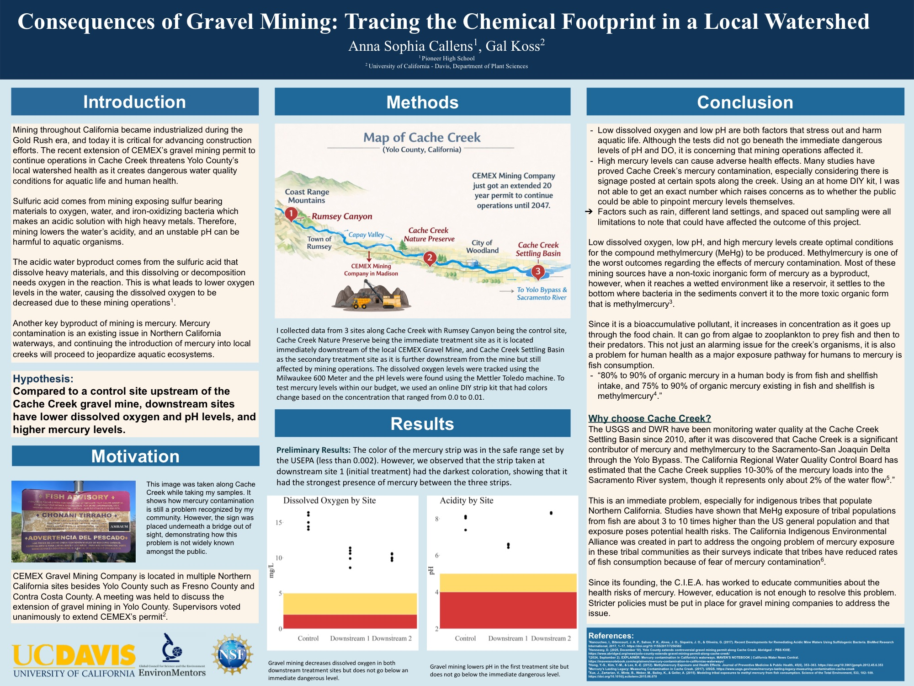
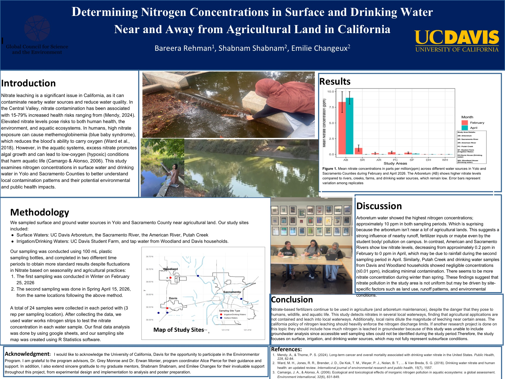
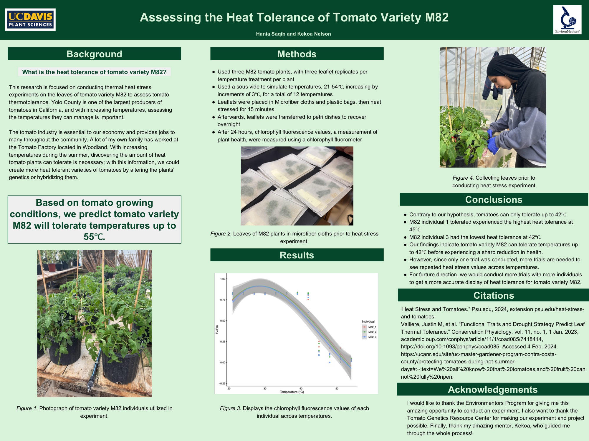

The short answers.
Short answers to the questions we hear most. Still have one? Contact us and we'll get back to you.
For students & families
What is EnvironMentors?
A year of real research, one-on-one with a UC Davis scientist. You pick an environmental question you care about, your mentor helps you investigate it, and by spring you're presenting your own findings at a science fair. EnvironMentors has run nationally since 1992; our chapter is part of GCSE, the Global Council for Science and the Environment.
Who can join?
Any high school student in grades 9 through 12 is welcome, as long as you can get to the UC Davis campus reliably on Wednesdays from 3 to 5 pm. Most of our students come from Pioneer High School in Woodland, where Wednesday early release makes the timing work well; if you're at Pioneer, you can also ask Ms. Lumbard in the science department about the program.
Do I need any science experience?
No. The projects are approachable on purpose, usually a few rounds of data collection. You bring the curiosity; your mentor walks you through the rest.
How do I join, and by when?
Fill out the interest form and we'll take it from there. For 2026–27, sign up by Wednesday, September 9, 2026; the first session is Wednesday, September 23, 2026, and the time in between is for the paperwork below. Missed the date? Reach out anyway and we'll see what we can do.
Where and when do you meet?
On the UC Davis campus: Wednesdays from 3 to 5 pm, in Room 2005 of the Plant & Environmental Sciences (PES) Building. We meet most weeks through the school year, roughly late September to early June, and email students the exact dates as they are confirmed. See the Schedule for the full year at a glance, including field trips and breaks.
How much time does it take?
The core commitment is weekly: Wednesdays, 3 to 5 pm, on the UC Davis campus through the school year. Plan on some additional hours to work on your research between sessions, and there are occasional field trips, usually on Saturdays.
What if I have a sport or another activity?
It works out more often than you'd think. By winter you're paired with your own mentor, and from there the schedule gets flexible: if practice or a meet collides with a Wednesday, you and your mentor can arrange other times to work together. Tell us about the conflict and we'll plan around it.
What if I have to miss a week?
Let us know, and come back the next week. The year is built with buffer, so a missed session is recoverable, never game-ending. Your mentor helps you catch up.
What does it cost?
Free. There is no cost to join.
What forms are needed?
A short packet a parent or guardian signs, sent to you when you join, so there's nothing to hunt down now: a standard UC participation waiver (available in English and Spanish), a photo and media release, an authorization for emergency medical treatment, an emergency contact form, and the EnvironMentors enrollment form. That covers the weekly sessions. If your project later involves hands-on lab work, a few extra safety steps apply and your mentor walks you through them; field trips get their own permission slip closer to each trip.
How do students get to UC Davis?
Getting to Davis is the one thing students arrange. You can drive yourself (we send parking details before the first session), take Yolobus from Woodland (Route 42 runs between Woodland and the Davis campus throughout the day), or carpool, since families often coordinate rides. We do not provide transportation yet, but we hope to. If getting to Davis is the only thing keeping you from joining, please reach out and we will do our best to help make it work. More detail is on the Schedule.
What kind of project would I do?
Your choice. Pick from a set your mentor proposes, or design your own around a question you care about. The scope is wide, from ecology and agriculture to biology and human health, because it's all connected. Projects stay simple and hands-on; the goal is to get your feet wet in real science, not to do something complicated.
Is there food? What should I bring?
There's pizza at sessions. Beyond that, just bring yourself; we provide the materials.
What is the Science Fair, and the international trip?
Every student presents their work at the UC Davis Science Fair in the spring, and can apply to present at GCSE's virtual research showcase in June. A top group goes on to the GCSE International Science Fair, with travel covered. In 2026, four of our students competed at the International Science Fair in Panama: Anna Callens won first place overall, and Bareera Rehman won Best Presentation.
When and where is the next International Science Fair?
New York City. GCSE is holding the 2027 fair during Climate Week, the week of September 19, 2027, a shift from the fair's usual June timing. It's attached to a weekend, so selected students miss at most three days of school, and travel is covered.
Example posters
Projects from this year's students (2026), presented at our Science Fair. Click any poster to view it full size.







For UC Davis mentors
Who can be a mentor?
Our mentors are UC Davis scientists. Usually that's grad students, but undergrads, postdocs, and faculty mentor too. If you do research at UC Davis and want to guide a high school student through a project, you qualify.
What's the time commitment?
The same weekly rhythm as your student: Wednesdays, 3 to 5 pm, on campus through the school year, plus a little prep time. The program runs the length of the school year, so you're seeing your student through their project start to finish.
What training or background check is involved?
Four things, all completed before you start working with students: a background check (fingerprinting via LiveScan), California mandated-reporter training, a short program-safety training, and a signed code of conduct. The trainings are online, and we walk you through every step.
Why mentor?
Because these students are the future, and helping them get there is genuinely rewarding. Being on the mentor side of the relationship is valuable experience in its own right, the science the students produce is impressive to be part of, and honestly, it's a lot of fun.
For teachers, faculty & supporters
I teach high school. How do my students get involved?
Nothing is required of you. Students can sign up on their own. That said, we'd welcome hearing from you, especially if there's wider interest at your school. If enough students want in, we're open to growing our presence there, up to forming a club or even a class.
I'm a PI. Can my lab contribute a project?
Yes, and many UC Davis PIs have been involved over the years. You might already have a project in mind, or even high schoolers already doing science in your lab. EnvironMentors brings the community, structure, and support around that work, and it's a real broader-impacts activity. Grad students in your lab can volunteer as mentors, and the scientific scope is wide: STEM in general is fair game. One ask: if you write EnvironMentors into a grant proposal, please consider including a budget line to help support the program. Get in touch with Grey or the leadership team to talk it through.
How can I support the program?
Thank you. We genuinely need the support. A donation page is on the way; until it's live, get in touch with Grey or the leadership team. Donations of lab surplus and equipment are welcome too.
Contact
The fastest start is the interest form. For anything else, email us directly:
- Grey Monroe, Co-Director — gmonroe@ucdavis.edu
- Erwan Monier, Co-Director — emonier@ucdavis.edu
- Anne Borger, Assistant Program Coordinator — aeborger@ucdavis.edu
Students at Pioneer High School can also ask Kimberly Lumbard in the science department — kimberly.Lumbard@wjusd.org.